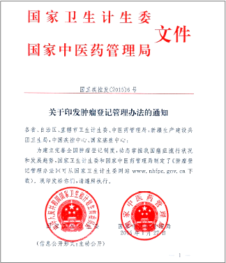
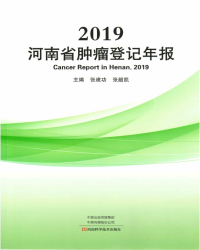
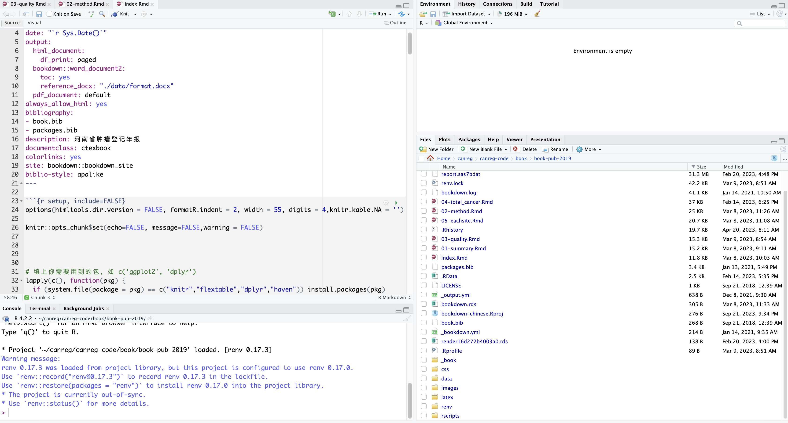

classDiagram
class 个人识别信息 {
登记处编号
身份证号
姓名
户籍地址
常住地址
}
class 人口学信息 {
性别
年龄
出生日期
婚姻状态
职业
民族
}
class 肿瘤信息 {
发病日期
诊断依据
原发部位ICDO3
形态学ICDO3
行为ICDO3
分级ICDO3
临床分期/TNM分期
多原发状态
双边性
}
class 治疗信息 {
治疗方法
}
class 随访相关信息 {
联系电话
联系人
联系人电话
常住地址
}
class 结局信息 {
最后接触日期
生存状态
死亡日期
死亡原因
死亡地点
}
class 信息来源 {
报告医院
住院号/门诊号
报告医师
报告日期
}
个人识别信息 --|> 人口学信息
个人识别信息 --|> 肿瘤信息
个人识别信息 --|> 治疗信息
个人识别信息 --|> 随访相关信息
个人识别信息 --|> 结局信息
个人识别信息 --|> 信息来源
农村地区肿瘤登记技术与方法
河南省肿瘤登记工作实践
👨⚕️陈琼，博士，副主任医师
🏥河南省癌症中心 河南省肿瘤医院
Saturday Sep 23, 2023
人群肿瘤登记的目的
肿瘤登记是系统性、经常性收集有关肿瘤及肿瘤患者信息的统计制度。
- 了解癌症流行情况
- 掌握癌症疾病负担变化趋势
- 了解癌症分布特征
人群肿瘤登记的意义
肿瘤登记是系统性、经常性收集有关肿瘤及肿瘤患者信息的统计制度。
- 确定癌症防控优化干预方向
- 评价癌症防控效果
- 助力癌症临床研究
发展历史
目录
发展历史
农村登记处的建立与发展
肿瘤登记数据质量控制
开发信息化肿瘤登记数据收集系统
肿瘤登记报告
河南省疾病负担情况
谢 谢 关 注 !
第一个农村肿瘤登记处
- 1957年，林县三不通引起重视
- 1959年，林县建立全国第一个农村肿瘤登记处
开展第一次死因调查
- 1970年代，全国第一次死因调查
- 全省人口的1/10
高发区的确立
- 豫西北太行山，豫西秦岭、伏牛山，豫南大别山

全死因报告体系的形成
- 1977年，林县、禹州开展常规全死因登记报告制度
- 1983年，建立河南省1/10人口的全死因登记报告体系
- 1988年，林县开展全癌种肿瘤登记工作
- 2004年，成立河南省癌症与生命统计中心，逐步规划河南省肿瘤登记报告系统建立
- 2008年，肿瘤登记处扩展至偃师、禹州、内乡、开封、鲁山
- 2009年，肿瘤登记项目纳入中央财政转移支付地方项目
颁布肿瘤登记管理办法

中国肿瘤登记工作指导手册
肿瘤登记工作的工具书
- 登记资料的收集
- 登记资料的整理
- 数据分析和报告撰写
健康中国行动
健康中国(2019-2030)癌症防治行动的实施，再一次促进了肿瘤登记工作的开展。
健康中原行动
健康中国(2019-2030)癌症防治行动的实施，再一次促进了肿瘤登记工作的开展。
出版肿瘤登记年报


发布线上年报
五大洲癌症发病率


农村登记处的建立与发展
目录
发展历史
农村登记处的建立与发展
肿瘤登记数据质量控制
开发信息化肿瘤登记数据收集系统
肿瘤登记报告
河南省疾病负担情况
谢 谢 关 注 !
肿瘤登记与肿瘤登记处
肿瘤登记
- 一定人群中收集肿瘤新发病例资料的操作方法。
- 主要目的是获得限定人群中肿瘤发生、转归统计指标，为评价癌症危害程度，制定防控措施及评价效果提供基础信息。
肿瘤登记处
- 是肿瘤登记的实施机构，进行病例资料的收集、保存、整理、统计和分析。
- 获得肿瘤发病率、患病率、死亡率及生存率等统计指标。
肿瘤登记处的类型
- 以人群为基础的肿瘤登记(Population Based Cancer Registration, PBCR)
- 以医院为基础的肿瘤登记(Hospital Based Cancer Registration, HBCR)
- 特殊目的肿瘤登记(Special Purpose Cancer Registration)
- 儿童肿瘤登记
- 白血病肿瘤登记
全球肿瘤登记历史
- 1927 汉堡
- 1941 康涅狄格州肿瘤登记处
- 1950-80s 欧洲和其他地区肿瘤登记处
- 1966 IACR成立
- 1966 《五大洲癌症发病》第一卷
- 1973 SEER项目设立
- 1992 美国CDC国家癌症登记计划
- 1960-1980年代中国部分地区的肿瘤登记
- 1974～ 1992 中国，三次以肿瘤为主的死因调查
- 2002 中国全国肿瘤登记中心建立
- 2019 全国肿瘤随访登记处数700，覆盖人群4亿多
中国部分农村肿瘤登记处的建立
人群肿瘤登记处的基本条件
- 政府及行政管理部门的政策与法规
- 具有诊治癌症病例的医疗资源
- 可获得当地居民在外地诊治的癌症病例相关信息
- 准确、有效的人口数据，区分户籍和外来人口
- 完整、有效的生命统计系统（死因报告系统）
人群肿瘤登记处的人员配置
- 人员数量： 3-5名职员/ 100万人群
- 条件要求：公共卫生（流行病、卫生统计）、临床医学及数据管理
- 登记处主任：流行病学或公共卫生背景的医学人员，对肿瘤学有一定了解
农村地区疾病负担的特点
农村肿瘤登记处的特点
1️⃣数据收集方法
- 主动与被动相结合
- 县-乡-村三级防癌网
2️⃣覆盖人群相对较小
- 村医相对熟悉病人的基本情况，更利于数据收集和生存随访
3️⃣数据来源多样
- 人群相对稳定
- 数据收集相对容易
4️⃣经济条件相对落后
- 诊断和治疗水平相对较低，对罕见肿瘤和儿童肿瘤的漏报率较高
人群肿瘤登记
是在某一限定的人群中收集全部恶性肿瘤新发病例的资料
目的
获得一定人群中癌症发生的各项统计指标，着重点在流行病学和公共卫生学领域
用途
- 描述社会中癌症危害的范围和特征，帮助建立优先的公共卫生策略。
- 病因学研究的原始资料。
- 帮助监测和评价癌症控制措施的效果。
人群范围的确定
确定源人群
- 户籍人口
- 常住人口
这两类人群（病例与人口）能有效区分，我国肿瘤登记统计报告户籍人口的结果(分子与分母一致，分子是分母的一部分)
肿瘤登记收集基本变量信息
肿瘤登记收集的变量包括以下7个部分（图 5）
- 个人识别信息
- 人口学信息
- 肿瘤信息
- 治疗信息
- 随访信息
- 预后信息
- 信息来源
肿瘤登记收集其他信息
人口数据
以县区为单位收集登记处覆盖人群分年龄、分性别户籍人口数
寿命表数据
以县区为单位收集登记处覆盖人群分年龄、分性别全死因死亡数以估计寿命表
病例发现来源
肿瘤登记强调多源上报、数据来源于医院、医保系统、县-乡-村医师网、全死因数据等。（图 6 ）
flowchart TD A[(肿瘤登记数据库)] --> B(医院) A --> B A --> C(县-乡-村三级医师网络) A --> D(医疗保险) A --> E(死因监测) A --> F(殡葬系统) A --> G(公安系统) B --> b1(住院患者数据) B --> b2(门诊患者数据) B --> b3(病案部门) B --> b4(病理诊断部门) D --> d1(新农合) D --> d2(城镇医保) D --> d3(职工医保)
病例发现来源：城市VS农村
flowchart TD A[(城市登记处)] --> B(主要来源) A --> C(补充来源) B --> D(临床医生) B --> E(病案室) B --> F(病理科) C --> G(城镇医保) C --> H(死因监测) C --> I(殡葬系统) C --> J(公安系统)
flowchart TD A[(农村登记处)] --> B(主要来源) A --> C(补充来源) B --> D(医院) B --> E(村医) B --> F(新农合) B --> G(城镇医保) C --> H(死因监测) C --> I(殡葬系统) C --> J(公安系统)
其他病例发现来源
- 癌症筛查(城癌、农癌、两癌)
- 健康体检
- 尸检发现
人口数据来源
目前，国内的人口数据需要多途径，多种方法结 合的方式方可获得较准确的数据。在大部分地 区，单一来源的人口数据及构成均存在较大的误差
- 人口普查资料(统计部门）
- 户籍管理部门获取
- 计划生育、妇幼保健及疾控中心
- 通过调查收集
人口数据来源
其他可利用的人口数据来源：
- 计划免疫资料
- 健康档案数据
- 农合医保数据
人口数据来源
通过多途径混合方式获取人口数据
- 通过公安户籍获取相应年份的户籍人口数
- 利用其它数据源获取分性别的年龄构成（百岁表数据最好）
- 总人口乘构成获取分性别的年龄组人口数
建立多源报告制度
基于肿瘤发病报告资料的有效性和完整性，多源性报告制度是必要的
多源性含义
医院内不仅治疗科室要报告，诊断科室也要报告；登记地区内不仅做出诊断的医院要报告，其他进行治疗处理的医院也要报告。
组织架构
省级登记处
河南省癌症中心
职责
- 制定全省工作计划、实施方案、质量控制
- 建立和完善肿瘤登记信息系统
- 技术指导、人员培训、考核评价
- 督导检查
- 数据分析和报告
市级登记处
市级CDC/肿瘤医院
职责
- 区域内技术指导、人员培训
- 市级质量控制
- 督导检查
- 数据分析和报告
县区级登记处
县区级CDC
职责
- 技术指导、人员培训
- 质量控制
- 督导检查
- 统计分析、数据发布
实施的癌种范围
肿瘤登记收集一定人群中所有恶性肿瘤、中枢神经系统良性肿瘤以及原位癌。
- C00-C97
- D32-D33
- D42-D43
- D45-D47
- 原位癌
生命统计系统的信息利用
完善的全死因登记报告系统是高质量肿瘤登记的基础
flowchart TD A[(全死因数据)] --> B(新发病例的补充) A --> C(被动随访的主要来源) A --> D(质量控制)
不以死亡证明书中的发病到死亡的时间推算发病日期，生命统计系统数据的完整，死亡证明书填写准确，根本死亡因和伴随死因为肿瘤的报告记录均做补发流程
通过死亡证明书补充新发病例流程
flowchart LR
A[(全死因数据)] --> C[与肿瘤发病数据匹配]
C --> D{判断是否匹配}
D -- 匹配 --> E[被动随访成功]
E --> E1[添加死亡信息]
D -- 肿瘤死亡未匹配 --> F[临床医学追访]
a(医院) --> F1[信息来源]
b(医保系统) --> F1
c(县-乡-村-医生) --> F1
F1 --> F
F --> G[(确认癌症)]
G --> G1[补发报告]
F --> H[(非癌症病例)]
H --> H1[排除]
F --> I[(无临床信息)]
I --> I1[排除]
肿瘤分类与编码
| 部位 | ICD10 |
|---|---|
| 口腔和咽 (除外鼻咽癌和喉) | C00-10,C12-14（除外C10.1） |
| 鼻咽癌 | C11 |
| 食管 | C15 |
| 胃 | C16 |
| 结直肠肛门 | C18-21 |
| 肝脏 | C22 |
| 胆囊及其他 | C23-C24 |
| 胰腺 | C25 |
| 喉 | C32，C10.1 |
| 气管、支气管、肺 | C33-C34 |
| 骨 | C40-C41 |
| 乳房 | C50 |
| 子宫颈 | C53 |
| 子宫体及子宫部位不明 | C54-55 |
| 卵巢 | C56 |
| 前列腺 | C61 |
| 睾丸 | C62 |
| 肾及泌尿系统不明 | C64-66，68 |
| 膀胱 | C67 |
| 脑,神经系统 | C70-C72 |
| 甲状腺 | C73 |
| 淋巴瘤 | C81-85,88,90,96 |
| 白血病 | C91-C95 |
| 其它 | Other（除外以上） |
| 所有部位合计 | ALL |
肿瘤分类与编码
ICD-O-3 编码
ICD-O-3编码是由4位解剖学部位编码、4位形态学编码、1位行为编码和1位分级编码共十位编码组成的肿瘤分类编码。
- 解剖学部位编码(Topo)：C34.9
- 形态学编码：M8140
- 行为编码：3
- 分级编码：1
肿瘤分类与编码
ICD-O-3 解剖学部位编码(Topo)
解剖学部位编码(Topo)由写大写字母C开头+两位数字+小数点+一位数字组成，用来描述肿瘤发生部位相关信息。
- C34.1 (小数点之前描述主要部位，小数点之后描述亚部位)
- C34：肺
- 1：上叶
肿瘤分类与编码
ICD-O-3 形态学编码(Morp)
ICDO3形态学编码由组织学、行为和分级编码组成，以描述肿瘤发生的性质。
- M组织学/行为/分级
- M8070/33
- 鳞状细胞癌 恶性 低分化
肿瘤分类与编码
ICD-O-3 行为编码
- 0 ：良性
- 1 ：良性或恶性未肯定
- 2 ：原位癌
- 3 ：恶性，原发部位
- 6 ：恶性，原发部位/恶性，继发部位
- 9 ：恶性，原发部位或转移部位未肯定
肿瘤分类与编码
ICD-O-3 分化程度编码
| 编码 | 意义 |
|---|---|
| 1 | 高分化 |
| 2 | 中分化 |
| 3 | 低分化 |
| 4 | 未分化 |
| 5 | T-细胞 |
| 6 | B-细胞 |
| 7 | 非T-非B |
| 8 | NK细胞 |
| 9 | 分化程度未确定 |
肿瘤分类与编码
ICD-O-3解剖学部位与ICD10有何异同？
发病时间的定义
- 首次就癌症问题到医院就诊咨询的时间
- 首次诊断时间: 医生诊断 或 病理报告时间
- 死亡时间: 死亡医学证明书，且无法追访
- 解剖时间: 之前从未怀疑过患肿瘤
重复病例的发现与处理
肿瘤登记基于多源报告制度，发现和处理重复病例是保证数据真实性的必要措施
- 实施的环节要求在各级上报单位
flowchart LR x[肿瘤数据上报] --> A[更新人口信息] y[全死因数据上报] --> A z[肿瘤协查数据上报] --> A A --> B[人口信息查重] B --> C[查重肿瘤信息] C --> D[标记多原发肿瘤]
多原发肿瘤
个体有发生一个以上癌症的可能，多部位原发癌纪录为新发病病例，与登记地区医疗水平有关，也与登记质量有关，登记处应注意多部位原发肿瘤病例资料的收集
- 国际上不同登记地区采用的判断规则不一样，例如北美地区与欧盟国家分别用不同的规则
IACR多原发判断规则
- 两个以上肿瘤，不依据发病时间判断多原发
- 每个原发肿瘤起源一个原发部位或组织，非扩散、复发或转移
- 一个肿瘤被诊断一个（对）器官，有些不同的部位编码被认定为同一部位肿瘤（不判定为多原发）；同样，一些- 形态学编码也归为同组编码（不认定为组织形态学不同，形态学编码记录大数）
- 系统性肿瘤（卡波西肉瘤、淋巴瘤等）侵袭多个不同器官，只记录为一个肿瘤（非多原发）
多部位原发肿瘤的确定标准
肿瘤登记处的发展
质量控制是肿瘤登记处发展的核心，开展可比性、完整性、有效性、时效性为主要指标的质量控制工作。
- 加强数据分析与利用，年报、5年报、研究论文
- 推进医院肿瘤登记系统的建立、实施和数据利用
- 扩大城市地区肿瘤登记处的覆盖比例
- 加强信息化数据收集系统的开发自动抓取，数据链接，各类结果指标自动生成等）
肿瘤登记数据质量控制
目录
发展历史
农村登记处的建立与发展
肿瘤登记数据质量控制
开发信息化肿瘤登记数据收集系统
肿瘤登记报告
河南省疾病负担情况
谢 谢 关 注 !
肿瘤登记的质量控制是获取高质量数据的核心
质量控制的意义
- 使不同地区之间的数据具有可比性
- 代表登记处所在地区的癌症人群
- 使癌症数据真实有效
质量控制指标体系
flowchart LR B(可比性) --> b1(发病的定义) B --> b2(多原发判断) B --> b3(分类与编码) B --> b4(死亡证明)
flowchart LR D(有效性) --> d1(组织学确诊比例) D --> d2(只有死亡医学证明书比例DC\%) D --> d3(部位不明比例UB%) D --> d4(数据内部一致性)
flowchart TD C(完整性) --> c1(死亡发病比M:I) C --> c2(只有死亡医学证明书比例DCO%) C --> c3(组织学确诊比例MV%) C --> c4(不同时间发病率的稳定性) C --> c5(年龄别发病率曲线)
质量控制
肿瘤登记收集的变量或者变量组合之间存在一定的逻辑关系，通过对单个变量或变量组合之间的逻辑关系进行审查，以提高肿瘤登记数据有效性。
单个项目
- 出生日期
- 发病日期
- 年龄、性别
- 发病部位
- 形态学
- 行为和分级
项目组合
- 性别/部位
- 部位/组织学学
- 年龄/部位/组织学
- 行为/部位
- 行为/组织学
- 性别/组织学
校验结果
- 正确✅
- 警告⚠️
- 错误❌
质量控制
完整性指标
癌症患者
诊断患者
肿瘤登记
质量控制
完整性指标
癌症患者
诊断患者
肿瘤登记
质量控制-完整性指标
率的连续性
质量控制-完整性指标
率的连续性
质量控制-完整性指标
相邻区域率的比较

质量控制-完整性指标
年龄别发病率

质量控制-完整性指标
死亡发病比(M:I)-连续性

质量控制-完整性指标
死亡发病比(M:I)-比较

质量控制-有效性指标
病理诊断比例(MV%)-连续性

质量控制-有效性指标
病理诊断比例(MV%)-比较
质量控制报告
开发信息化肿瘤登记数据收集系统
目录
发展历史
农村登记处的建立与发展
肿瘤登记数据质量控制
开发信息化肿瘤登记数据收集系统
肿瘤登记报告
河南省疾病负担情况
谢 谢 关 注 !
提高肿瘤登记数据收集信息化、智能化水平
数据收集系统的发展

最新肿瘤登记系统登录界面
实现专业功能
已升级功能
- 数据上报
- 重卡判断
- 多原发卡判断
- 被动随访
- 随访管理
- 机构管理
- 其他辅助功能
待升级功能
- 常规数据分析
- 质量控制可视化
- 发病地理信息管理
- 就医历史纵向追踪
磨刀不误砍柴工，我们将继续不断完善升级肿瘤随访登记信息收集系统，提高数据收集效率
系统设计思路
新系统围绕人口身份识别信息，不断更新肿瘤信息、随访信息、地理信息等（图 11）
- 追踪就医历史记录
- 多渠道更新随访信息
- 追踪患者地理信息
- 多渠道数据来源上报
flowchart LR A[人口身份识别信息] --> B[肿瘤信息] A --> C[随访信息] A --> D[信息来源] A --> E[地理信息] x[肿瘤数据上报] --> A y[全死因数据上报] --> A z[肿瘤协查数据上报] --> A
保证人口信息数据的唯一性特别重要，也是重卡合并、多原发标记和更新随访数据的基础。
数据协查功能
在实际数据上报过程中，一些大型医院的病例数较多，通常每月肿瘤病例超过1万例， 这样会造成无法高质量完成数据上报任务。
- 无需数据的逻辑核查即可上传
- 按照户籍地址推送至相应的登记处
- 由户籍所在地登记处进行重新编码和填报等操作
数据查重
查重推荐操作流程
人口信息的查重特别重要，在肿瘤病例的查重之前，需要先做人口信息查重（图 12）
flowchart LR x[肿瘤数据上报] --> A[更新人口信息] y[全死因数据上报] --> A z[肿瘤协查数据上报] --> A A --> B[人口信息查重] B --> C[查重肿瘤信息] C --> D[标记多原发肿瘤]
死亡补发病
死亡补发病流程是提高肿瘤登记处数据完整性的关键措施，每年应在上传全死因数据之后，应通过系统查找关键词肿瘤|未匹配，然后，点击后面的编辑按钮，补充相应的发病信息。
肿瘤登记报告
目录
发展历史
农村登记处的建立与发展
肿瘤登记数据质量控制
开发信息化肿瘤登记数据收集系统
肿瘤登记报告
河南省疾病负担情况
谢 谢 关 注 !
开发自动化指标生成工具
为什么?
- 登记处的主要目标之一就是产生肿瘤发病、死亡、生存相关的统计指标
- 促进癌症防控政策的产生
- 促进数据的共享和利用（专业人员和大众）
为什么？
- 疾病负担
- 病因学
- 癌症筛查
- 预后
- 政策
肿瘤登记报告的类型
肿瘤发病报告(肿瘤登记年报)


肿瘤登记报告的类型
肿瘤登记网站
肿瘤登记报告的类型
研究论文
肿瘤登记报告的类型
新闻发布
肿瘤登记报告流程
flowchart LR A(数据来源单位) --> B(县区级登记处) B --> C(市级登记处) C --> D(省级登记处) D --> E(质量控制) E --> B B --> A E --> C E --> F(综合评估) F --> G(年报撰写及发布)
肿瘤登记报告的内容
基础信息
- 登记处描述和登记流程
- 覆盖区域(人口和地区)
- 统计术语
- 组织架构
- 专业人员
- 数据来源与报告程序
- 疾病编码
- 癌症的定义
- 多原发癌
肿瘤登记报告的内容
基础信息
- 登记处描述和登记流程
- 覆盖区域(人口和地区)
- 统计术语
- 地理区域描述
- 城乡定义
- 人口数据来源
- 人口金字塔
肿瘤登记报告的内容
基础信息
- 登记处描述和登记流程
- 覆盖区域(人口和地区)
- 统计术语
- 粗率
- 年龄别率
- 年龄标化率
- 截缩率
- 生存率
- 标准人口
肿瘤登记报告的内容
结果评估
- 不同年份之间病例的一致性
- 癌症部位分布与构成
- 诊断有效性指标
- 相邻区域的指标比较
肿瘤登记报告的内容
结果展现
- 表格
- 图 (条形图、饼图、线图、等)
如何制作肿瘤登记报告
数据准备
- 原始个案数据(按照上报国家癌症中心的格式准备)
- 统计结果

如何制作肿瘤登记报告
制作工具
- Word
- SAS
- R & Rstudio
如何制作肿瘤登记报告
SAS程序
思路
利用SAS生成统计结果，再利用R & Rstudio把统计结果进行展现，包括文字描述和可视化展现(各种统计图形)
如何制作肿瘤登记报告
SAS
/***************************************************************************************/
/**************************************************************************************/
/*************************************************************************************/
dm "log; clear; output; clear;odsresult;clear";
/*%let path=%substr(%sysget(SAS_EXECFILEPATH),1,%eval(%index(%sysget(SAS_EXECFILEPATH),%sysget(SAS_EXECFILENAME))-1));*/
options noxwait xsync mprint mstored sasmstore=cMacros validvarname=any;
/*Set the Library of Variable Value Formats.*/
%if %eval(%sysfunc(libref(cMacros)) ^= 0) %then %do;libname cMacros "D:\CanReg\Statistic\code\Create_report\MacrosFormats\";%end;
options fmtsearch=(cMacros work);
/*设置历史数据储存路径*/
libname hisdata "D:\CanReg\Statistic\code\Create_report\data\hisdata.accdb";
/*设置登记处编码表路径*/
libname code "D:\CanReg\Statistic\code\Create_report\codedata\code.mdb";
/*设置ICD10编码对应表储存路径*/
libname icd "D:\CanReg\Statistic\code\Create_report\codedata\";
/* Type: hj 户籍人口; sj 实际人口*/
%let type=sj;
/*******report宏变量,是否进行肿瘤登记年报数据分析：yes：年报数据分析；no：常规分析;******/
/***当report为yes时,必须在code.registry里指定 变量 哪些areacode收录年报，变量名为report+年份;*/
%let report=no;
/*from指定开始统计的年份*/
%let from=2015;
/*to指定统计结束的年份*/
%let to=2019;
/*period为fixed时按照2008-2012;2013-2017;2018-2022时期分组统计*/
/*period为depend时从from年份到to年份合并时期统计*/
/*period为其他值时不合并时期统计*/
%let period=depend;
/*按照yearselect指定的变量值决定开始从哪一年份开始统计登记处数据，当report=yes时，yearselect变量失效*/
%let yearselect=select;
%let label=no;
%if &label=yes %then %do;
%include "&path.MacrosFormats\labelfmt.sas";%end;
/*输出2019年数据审核结果*/
libname data "D:\CanReg\Statistic\code\Create_report\tmpdata\report\2019\";
%let type=sj;
%let report=no;
%let from=2015;
%let to=2019;
%let period=depend;
%let yearselect=select;
proc datasets noprint lib=work mt=data kill;run;
options noxwait xsync;
%create_report;
libname data clear;如何制作肿瘤登记报告
R & Rstudio
统计图形
输出综合报告
基于R包：bookdown
年报图形的自动生成
整体年报自动输出word、pdf、html
如何制作肿瘤登记报告
部分程序：
如何制作肿瘤登记报告
内嵌的rscripts自动生成所有图

如何制作肿瘤登记报告
以markdown + R 行内代码方式(Rmarkdown)生成文字描述
线下和线上肿瘤登记年报
肿瘤登记质量控制报告
主要内容
- 质量控制报告撰写
特点
- 登记处数量多(130个县区)
- 县区级专业人员能力不足
- 质控报告反馈至市级和县区级
我们基于Rmarkdown编写了系列质量控制、年报生成工具
质量控制Rmarkdown工具
- 五大洲癌症发病率质量控制报告
- 年度数据审核质量控制报告
五大洲癌症发病率质量控制报告
程序：
---
title: "河南省《五大洲发病率第12卷》数据上报审核程序"
subtitle: "登记处："
author:
- "2013-2017年"
- "Qiong Chen @ Henan Cancer Center/Henan Cancer Hospital"
date: "2023-10-23"
output:
prettydoc::html_pretty:
theme: cayman
number_section: TRUE
highlight: github
vignette: >
%\VignetteIndexEntry{Vignette Title}
%\VignetteEncoding{UTF-8}
%\VignetteEngine{knitr::rmarkdown}
editor_options:
chunk_output_type: console
---
<img src="./logo-hospital.png" style="position:absolute;top:0px;right:0px;width:250px;padding-right:50px;padding-top:10px;transform: translateY(-60px); filter:drop-shadow(rgb(255, 255, 255) 0 60px)" />五大洲癌症发病率质量控制报告
年度肿瘤登记数据审核
程序：
#####
# 年度数据审核##
#####
library(dplyr)
report<-haven::read_sas("./input_data/report.sas7bdat")
report <-report%>%
filter(substr(areacode,1,1) %in% c("4","5"))%>%
mutate(city=ifelse(city %in% c("1","11"),"1","2"))
report%>%
select(areacode,name)%>%
filter(substr(areacode,1,1)=="4",!(substr(areacode,5,6)=="00"))%>%
unique()->registry
quality <- haven::read_sas("./input_data/quality.sas7bdat")
quality <- quality%>%mutate(city=as.character(city),
city=ifelse(city=="1","1","2"))
#areacodes<-c("411081","410224","411322","411422","411425","411521","411624","411625")
areacodes<-registry$areacode
lifetable <- haven::read_sas("./input_data/lifetable.sas7bdat")
#列出各登记处质量控制列表
rmarkdown::render(
input = './rmd_template/annualmainpage.Rmd',
output_file = 'index.html',
output_dir = "./output/annualcheck/"
)
for (code in areacodes) {
state<-registry[registry$areacode==code,c("name")]$name
dir.create(paste0("./output/annualcheck/",code,state))
rmarkdown::render(
input = './rmd_template/annualcheck.Rmd',
output_file = 'index.html',
output_dir = paste0("./output/annualcheck/",code,state)
)
}
fetable <- haven::read_sas("Y:/CanReg/statistic/data/lifetable.sas7bdat")
rmarkdown::render(
input = './Rmd_template/Annualmainpage.Rmd',
output_file = 'index.html',
output_dir = "./output/annualCheck/"
)年度肿瘤登记数据审核
主页显示所有登记处质量控制指标一览表,详细页面显示具体指标的详细信息。
R包：canregtools


我们想尽量把前面所有的功能都集成到这个R包里，读入原始数据后，可以通过各种方式展现肿瘤登记数据，我们的目的是使基层登记处的工作人员能更方便的开展工作。
- 各种统计计算
- 可视化
- 自动化报告
- 版本: 0.2.1
- 网站地址: https://gigu003.github.io/canregtools/
- github: https://github.com/gigu003/canregtools
- 作者: 陈 琼
河南省疾病负担情况
目录
发展历史
农村登记处的建立与发展
肿瘤登记数据质量控制
开发信息化肿瘤登记数据收集系统
肿瘤登记报告
河南省疾病负担情况
谢 谢 关 注 !
发病情况
死亡情况
变化趋势
生存情况
不同年龄癌症5年生存率情况(2017-2019)
生存情况
河南省不同癌症部位5年生存率情况(2017-2019)
生存情况
河南省不同地区癌症5年生存率情况(2017-2019)
肿瘤登记的发展方向
谢 谢 关 注 !
陈 琼 博士
chenq08@126.com
河南省肿瘤登记工作实践